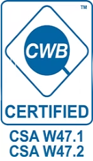
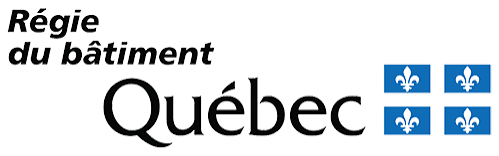

Énergie Valero
≤ 3 semaines
Passerelles et supports en urgence : de l'appel à la livraison, soumission et production comprises.

Depuis 1991 · Deschambault-Grondines, Québec
Conception, fabrication, peinture et installation sous un même toit. Un seul entrepreneur, de A à Z, sans sous-traitance, pour les alumineries, les mines, les papetières et l'industrie lourde.
Certifié et accrédité

CWBCSA W47.1 div. 1 · W47.2
RBQTuyauterie sous pressionNos services
Nos équipes multidisciplinaires prennent vos projets en charge de la prise de mesures sur place jusqu'à l'installation. Résultat : des délais plus courts, des coûts maîtrisés et du sur-mesure sur chaque projet.

Acier, acier inoxydable, aluminium et cuivre : roulage, découpage, pliage, assemblage et soudage certifié.

Laser à fibre optique de 4000 W et presse plieuse de précision, pour des pièces de toute envergure.

Fabrication, installation et entretien de réservoirs et de tuyauterie sous pression, avec calculs CODEWARE/COMPRESS.

Dix dessinateurs et concepteurs, et quatre ingénieurs. Visualisez votre produit en 3D (Autodesk Inventor) avant la fabrication.

Analyse de risques sur place, plan d'action et protection des machines et convoyeurs, conformes aux exigences de la CNESST.

Sablage au jet de sable ou de verre et chambre de peinture. Notre four de cuisson réduit le séchage de 24 h à 3 h.

Mécaniciens de chantier, soudeurs-assembleurs et manœuvres pour vos arrêts planifiés, partout au Canada.

Création et pose d'étiquettes résistantes, avec une base de données accessible pour retrouver chaque pièce.
Service d'urgence
Partout au Canada, réparations temporaires ou permanentes, clé en main. Votre appel est transféré directement au cellulaire de l'employé de garde.
Appeler le 418-286-4949Énergie Valero
≤ 3 semaines
Passerelles et supports en urgence : de l'appel à la livraison, soumission et production comprises.
Alcoa
Réponse immédiate
Coupage de flex pendant l'arrêt d'une cuve. L'équipe de garde a répondu sur-le-champ.
Expertise en soudage
Accrédités CSA W47.1 Division 1, avec un ingénieur en soudage dans l'équipe.
Une expertise avancée en milieu industriel. Nos espaces de travail vastes et séparés éliminent tout risque de contamination entre l'acier et l'inox.
Certifiés CWB depuis de nombreuses années. Partenaires de longue date d'Alcoa et de Rio Tinto pour les conducteurs électriques et structuraux. Soudeuses spécialisées Pulse & Pulse.
L'une des rares entreprises à posséder une procédure de soudage du cuivre approuvée par le CWB. Experts en fabrication de flexibles pour la conduction de l'électricité.
Réalisations


Cliquez sur une photo pour l'afficher en plein écran. Titres des réalisations à préciser (projet, client).
Ils nous font confiance


Notre entreprise
Depuis son ouverture en 1991, Pro-Métal Plus a établi son usine dans le parc industriel de Deschambault-Grondines (comté de Portneuf), au Québec. L'entreprise se spécialise dans la transformation de métaux tels que l'acier, l'acier inoxydable, l'aluminium et le cuivre.
Notre équipe de plus de 110 employés dynamiques et compétents conçoit, fabrique, soude, effectue le nettoyage au jet de sable ou de verre, applique la peinture prédéterminée et installe différentes sortes de pièces et d'équipements industriels, selon les spécifications de notre clientèle.
Nous offrons aussi un service de location de personnel qualifié et spécialisé. Nous vous aidons lors de vos arrêts de production planifiés dans de multiples secteurs : alumineries, papetières, mines, cimenteries et tout autre type d'usine où sont requis des champs de spécialisation et des compétences propres à nos qualifications.
Entreprise sœur : BIOmasse Plus
Pro-Métal Plus est une société qui a vu le jour en 1991 et qui est établie au 12, boulevard des Sources à Deschambault-Grondines, dans le parc industriel.
Se démarquant par son dynamisme, son service à la clientèle et la sous-traitance industrielle, notre équipe travaille dans divers secteurs d'activité :
Offrir à nos clients des produits et services sur mesure et de qualité supérieure grâce à des employés qualifiés et spécialisés dans le domaine de la transformation de métaux, tout en effectuant les travaux dans un cadre sécuritaire.
Soudage et entretien industriels.
 ISO 9001
ISO 9001 ASME
ASMEPro-Métal Plus vise l'excellence dans tous les domaines d'activités de l'entreprise :
Carrières
Nous sommes en tout temps à la recherche d'employés compétents et dynamiques pour se joindre à notre équipe de plus de 110 personnes à Deschambault-Grondines.
Envoyez-nous votre curriculum vitæ grâce au formulaire en ligne. Merci de l'intérêt que vous portez à notre entreprise !
Nos postes ouverts sont publiés sur Jobillico.
Voir nos offres sur Jobillico ↗Phase 2 : les offres s'afficheront directement ici (intégration Jobillico).
Location de main-d'œuvre
Notre équipe de mécaniciens de chantier certifiés et d'installateurs est disponible en tout temps, partout au Canada.
Contact
Joignez vos plans à votre demande : nous vous répondons rapidement avec une soumission claire.